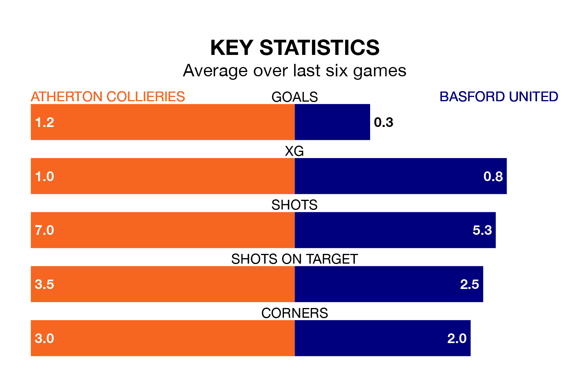

Atherton Collieries and Basford United both come into Saturday's kick-off in poor form, having picked up one and four points respectively in their last six games.
Atherton Collieries have drawn just one of the last six, while Basford have taken one win and one draw.
Atherton Collieries are bottom of the table after 33 games, of which they have won five and drawn four, earning 19 points.
Basford are four places ahead of the home team in 18th, with six wins and nine draws putting them on 27 points.
In the last five years, Atherton Collieries and Basford have played each other on five occasions. Atherton Collieries won one of them, Basford three, and they drew once.
On average, Atherton Collieries scored 1.2 goals and Basford 1.6 in those matches.
Their last meeting was on August 26, when they played out a 1-1 draw.
With 32 goals in 35 games so far this season, United are the league's second-lowest scorers with 0.9 goals per game. And they are conceding more than average, letting in 58 goals at a rate of 1.7 per game.
Atherton Collieries are also below average scorers, with 1.3 goals per game, compared to a league average of 1.6. They have conceded 2.5 goals per game.
Atherton Collieries's last match was on March 16, a 2-1 loss against United of Manchester.
Basford lost 2-0 against United of Manchester last time out, on March 23.
Updated: 12:39 (UTC), 26/03/24